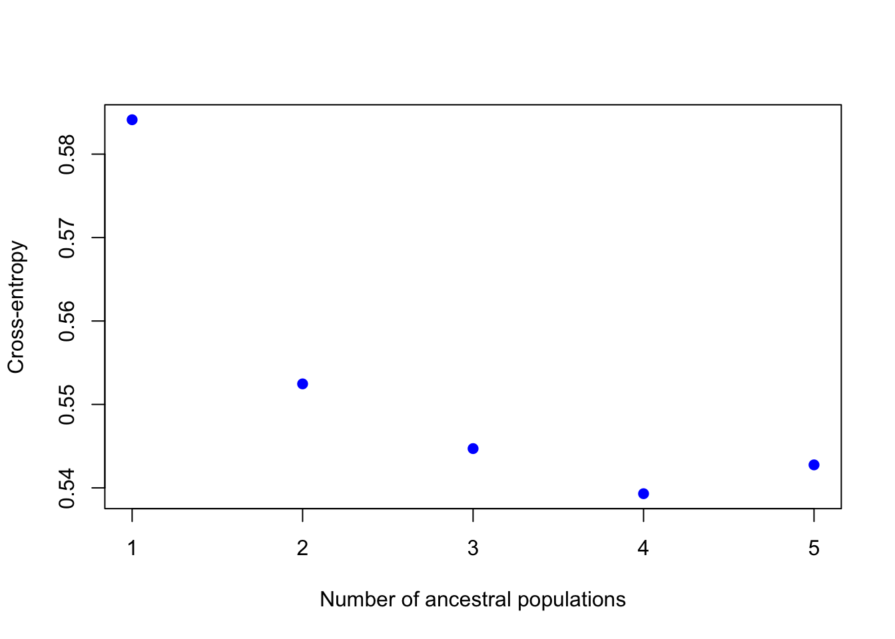
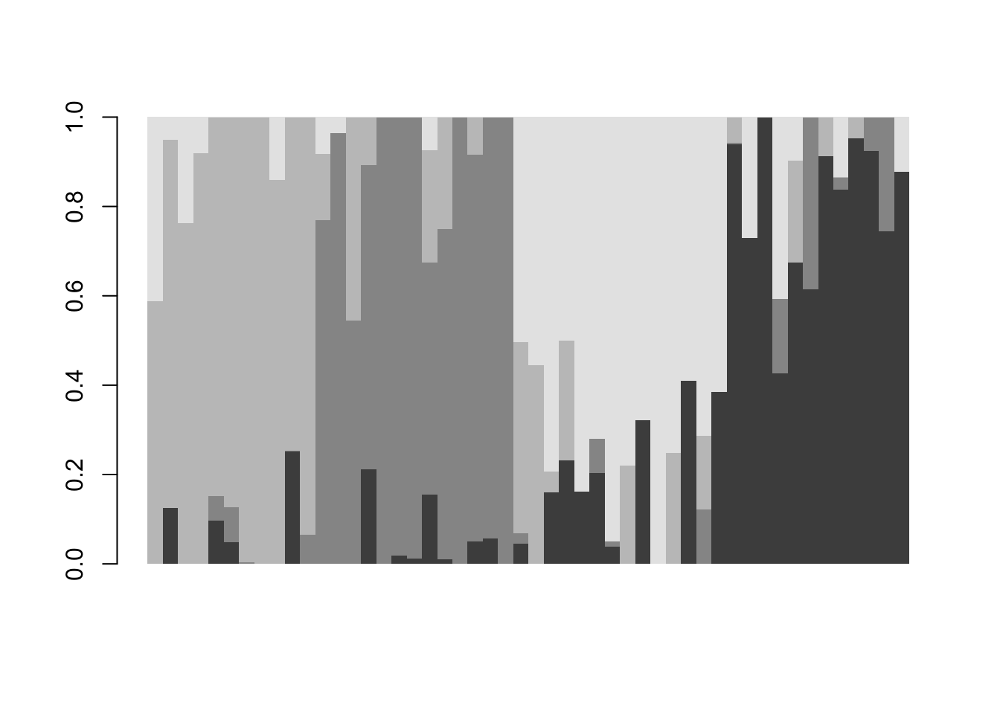
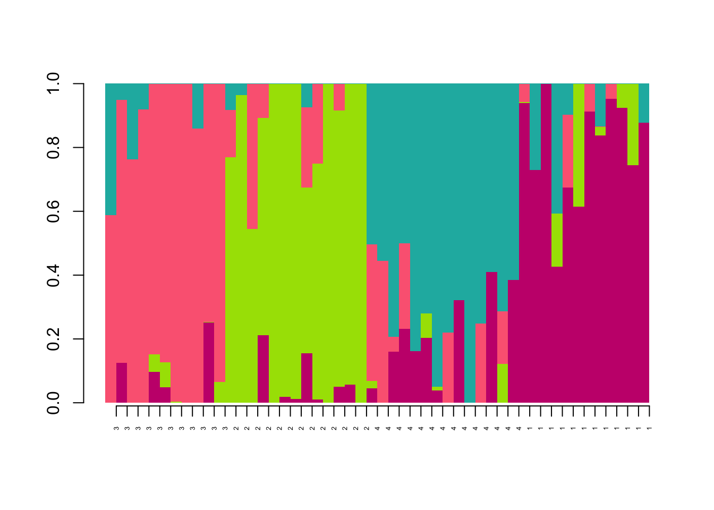

Week 4 Genetic Diversity
4.1 The aggregate and apply functions
Today we’ll two useful functions that you can use for dataframes, apply and aggregate. Let’s use the palmerpenguins dataset again:
library(palmerpenguins)
head(penguins)## # A tibble: 6 x 8
## species island bill_length_mm bill_depth_mm flipper_length_… body_mass_g sex
## <fct> <fct> <dbl> <dbl> <int> <int> <fct>
## 1 Adelie Torge… 39.1 18.7 181 3750 male
## 2 Adelie Torge… 39.5 17.4 186 3800 fema…
## 3 Adelie Torge… 40.3 18 195 3250 fema…
## 4 Adelie Torge… NA NA NA NA <NA>
## 5 Adelie Torge… 36.7 19.3 193 3450 fema…
## 6 Adelie Torge… 39.3 20.6 190 3650 male
## # … with 1 more variable: year <int>
One thing we might want to do is find out which individual has the highest value for each column. We can use the apply function to do the same thing to each column:
?apply
apply(penguins[,3:6],MARGIN=2,which.max)## bill_length_mm bill_depth_mm flipper_length_mm body_mass_g
## 186 20 216 170Notice that we only used columns 3-6 because these are numeric (rather than categorical). The second argument, MARGIN, is asking whether we should be doing the function for each row (MARGIN=1), or each column (MARGIN=2). The final argument is the function we want to use. which.max asks for the index (in this case, which row) has the maximum value.
Another useful function is aggregate. Sometimes you might want to summarize groups within a dataframe. aggregate does this easily. For example, what if we want to average values for each species:
?aggregate
aggregate(penguins[,3:6],by=list(penguins$species),mean)## Group.1 bill_length_mm bill_depth_mm flipper_length_mm body_mass_g
## 1 Adelie NA NA NA NA
## 2 Chinstrap 48.83382 18.42059 195.8235 3733.088
## 3 Gentoo NA NA NA NAThis gives us the mean for each set of rows that share a value in the “species” column. The second argument, by, tells how to group. The third argument is the function to use.
These commands will come in handy today!
Let’s take just the quantitative data for a moment:
4.2 Running a clustering analysis and deciding on a K value
The example file for use in class today can be downloaded here
A common way to analyze population structure is using hierarchical clustering. Probably the most heavily used program to do this is called STRUCTURE. However, we’ll stick to similar tools you can use in R. Today we’ll use LEA for our clustering analysis. LEA cannot be downloaded from the normal R database, so use the following code:
install.packages("BiocManager")
install.packages("LEA")Then load the library
library(LEA)
For the analysis today, we’re going to use SNP data. Open the file you downloaded called week4_example.geno using a text editor. This file is in geno format. That means there is one line per individual and genotypes are coded as 0,1,or 2. 0 and 2 are homozygotes and 1 is a heterozygote. 9 means missing data. Notice that this only works when you are looking at SNPs with just 2 alleles (biallelic).
We’ll use the package LEA to read this file in and look at population structure. Make sure you have the right path!!
project <- snmf("data/week4_example.geno",
K = 1:5,
entropy = TRUE,
repetitions = 10,
project = "new")Remember what K values are? That means ‘how many populations should we try to split this data in to?’ Here we run 10 repetitions per K value. That’s because each run is slightly different so you want to have confidence in your answer. You’ll see what entropy means in a second. You’ll get a bunch of output in your console when you run this command. It will also create a new folder on your computer called “example.snmf.” It contains a bunch of different files for each run of the clustering program. We will be able to use these files to analyze and visualize our results.
Now we’ll chose the “best” value of K. Know that there are several ways to do this and they don’t always agree, so this should be interpreted with caution. Here we will use cross-entropy loss. This basically asks how consistently our model is able to categorize the samples. The lower the cross-entropy the better the model is doing. Let’s plot all the values of K:
plot(project,col="blue",pch=19)
When I ran this, K=4 had the lowest cross entropy. This plot might look slightly different each time you run it.
4.3 The Q matrix
Now that we’ve decided which value of K to look at, we can look at the ancestry estimates for each individual.
qmatrix <- Q(project,K=4,run=1)
This command pulls out the ancestry matrix (called the Q matrix) for the first run with K=3. Let’s look at the Q matrix.
head(qmatrix)## V1 V2 V3 V4
## [1,] 0.000099991 0.768583000 0.149645000 0.081672100
## [2,] 0.000099982 0.964339000 0.000099982 0.035461300
## [3,] 0.000099982 0.545125000 0.454675000 0.000099982
## [4,] 0.211788000 0.680727000 0.107385000 0.000099991
## [5,] 0.000099982 0.000099982 0.587792000 0.412008000
## [6,] 0.939237000 0.003872600 0.056790100 0.000099991
Here, each row is an individual and each column is one of the inferred clusters. First, lets give the individuals “IDs” as rownames. You’ll see that this is important later. Next, one thing we could do is look at which cluster has the highest ancestry for each individual. The which.max function just gives you the index (which column in this case) of the highest value.
rownames(qmatrix) <- 1:nrow(qmatrix)
maxCluster <- apply(qmatrix,1,which.max)
maxCluster## 1 2 3 4 5 6 7 8 9 10 11 12 13 14 15 16 17 18 19 20 21 22 23 24 25 26
## 2 2 2 2 3 1 3 2 1 3 3 2 4 3 4 4 2 4 1 4 4 1 4 2 3 4
## 27 28 29 30 31 32 33 34 35 36 37 38 39 40 41 42 43 44 45 46 47 48 49 50
## 2 1 2 1 3 3 3 1 2 4 1 1 3 1 1 2 4 3 4 2 4 1 4 4
If we pretend maxCluster gives refers to the population from which the individual came, we can use the aggregate function to look at average cluster membership across each population:
aggregate(qmatrix,by=list(maxCluster),mean)## Group.1 V1 V2 V3 V4
## 1 1 0.80271658 0.07627143 0.03502381 0.08598811
## 2 2 0.03968297 0.84556923 0.09996497 0.01478282
## 3 3 0.04753737 0.01866167 0.84999500 0.08380596
## 4 4 0.13964038 0.01670342 0.12993916 0.71371700NOTE: Although we are using maxCluster as an indicator of population here, usually we would use some sort of a priori information we had, such as geographic location or maybe morphological species, depending on our question. This distinction will be important for your homework!
4.4 Plotting
Now lets plot the ancestry results. Basically, we just want to make a barplot of the qmatrix. You can do that with the barchart function in the LEA package:
barchart(project, K=4, run=1,
border=NA, space=0)
## $order
## [1] 5 7 10 11 14 25 31 32 33 39 44 1 2 3 4 8 12 17 24 27 29 35 42 46 13
## [26] 15 16 18 20 21 23 26 36 43 45 47 49 50 6 9 19 22 28 30 34 37 38 40 41 48We can also try to label each bar with information. For example, lets try to label with the population assignment that we inferred, maxCluster:
barchart(project, K=4, run=1,
border=NA, space=0) -> bp
axis(1,at=1:length(bp$order),label=maxCluster[bp$order],las=2,cex.axis=0.4)The grayscale is boring!! R has many many options for color packages and you could even make one of your own! For example, here is a fun one inspired by favorite La Croix flavors!
install.packages("devtools")
devtools::install_github("johannesbjork/LaCroixColoR")And now use it in our bar chart:
library(LaCroixColoR)
my.cols=lacroix_palette("PassionFruit",n=4,type="discrete")
barchart(project, K=4, run=1,
border=NA, space=0,col=my.cols) -> bp
axis(1,at=1:length(bp$order),label=maxCluster[bp$order],las=2,cex.axis=0.4)
4.5 Homework
Now that we know how to estimate observed and expected heterozygosity, we’ll look at changes over time. Start a new script for your homework
###Homework 3: Write a script that does the following:
1. Read in “genotypes.csv” and subset the dataframe to Mt Buller samples only. How many samples do you have from each year?
2. Calculate mean observed heterozygosity for each year. Put these into a single dataframe.
3. Calculate mean expected heterozygosity for each year. Add these to the dataframe from question 2.
4. Plot mean expected heterozygosity over time.
5. Add a vertical lines to your plot to show when introductions took place (hint - use the abline command)